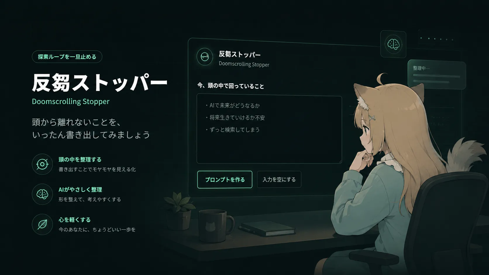

App
反芻ストッパー
グルグル思考を手放すアプリ
AIに思考を分析してもらう機能付き

開発メモ
反芻思考（考えがぐるぐる回ってしまう状態）を解消するために作りました。
普段AIと相談しているのですが、キリがなくなったら一回このアプリに投げて忘れるようにしています。

App
グルグル思考を手放すアプリ
AIに思考を分析してもらう機能付き

反芻思考（考えがぐるぐる回ってしまう状態）を解消するために作りました。
普段AIと相談しているのですが、キリがなくなったら一回このアプリに投げて忘れるようにしています。